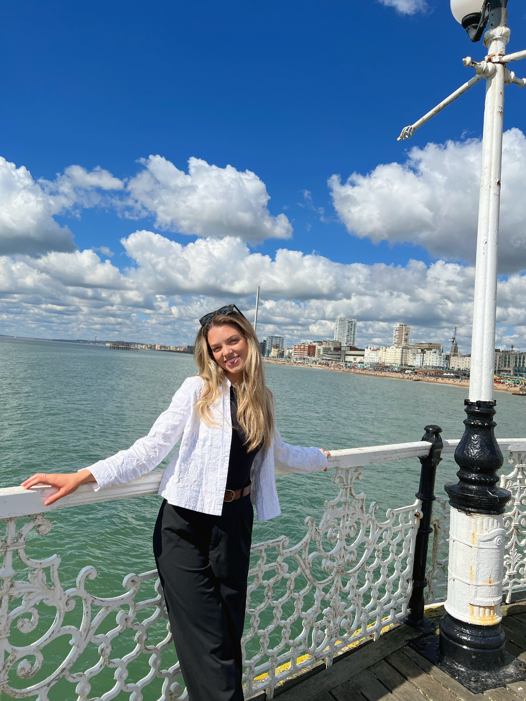

Tijana Teodorovic
Experienced Marketing Professional

Profile
Hello! My name is Tijana and I am an experienced Marketing Professional with a first-class degree
in Psychology. My biggest achievement during my time at university was publishing my first scientific
paper based on a pilot study focusing on adapting a digital mental health assessment tool for use in low and
middle-income countries in SE Europe.
My marketing experience to date includes working at a start-up media agency as an intern, where I worked on multiple
clients covering many different categories, as well as working at one of the world's biggest agency groups, Publicis Groupe,
where I worked on Haleon's (former GSK) consumer health brands. During my time at Publicis, I was lucky to have worked
with many big names such as Spotify, Twitch and Meta.
Before I was a Psychology studient, I was a merit-based full-ride scholarship holder, which allowed me to spend a year in the U.S. on
a cultural exchange when I was only 16 years old. I have also displayed my interest in different cultures and bulding a better and more
inclusive future by participating in Challenge History project focusing on understanding conflict in the Western Balkans, as well as
participating in Belgrade International MUN conference as a delegate on two occasions.
Education
York St John University
BSc Psychology (hons)
2018 - 2021
Grade: 1st
- Throughout my degree, I mostly focused on Social and Clinical Psychology. This helped me build an understanding
on how we function as humans between ourselves in society, as well as what the underlining reasons for our
behaviour are.
- My degree allowed me to gain both qualitative and quantitative research experience. In my Quantitative Research Methods
module, I learned how to use SPSS Statistics for data analytics, while my Qualitative Research Methods module gave me
invaluable interviewing experience. Both of these modules also helped me learn how to build surveys for the
purposes of research in Qualtrics.
- During my time at university, I volunteered as an academic representative. This role included collecting feedback from
peers in a form of survey to share with our senior lecturers with a goal of improving student experience.
- As a Peer-Assisted Study Sessions (PASS) leader, being promoted to a Senior PASS leader position in my third year, I
organised and facilitated study sessions for first-year Psychology students bi-weekly in my 2nd and 3rd year.
- Other volunteering experience during my degree includes volunteering as a youth mentor at The Island, a local
charity in York. My time at this charity was cut short due to Covid lockdown.
After the lockdown has started, I started volunteering virtually at another local charity called Converge, a charity
helping adults using mental health services. I assissted in organising weekly film workshops, the goal of which was to teach
the participants how to make short films.
Prva kragujevacka gimnazija
Grammar school
2014 - 2015, 2016 - 2018
- The classes I took included:
- Languages: Serbian Grammar and Literature, English, French and Latin
- Sciences: Biology, Physics and Chemistry
- Humanities: History, Geography, Sociology, Law and Philosophy
- Psychology
- Maths
- Programming
- Art history and Music history
- I was a member of the award-winning Linguistics Club in my first year.
- As a member of Sopce, a student body responsible for organising school events, I was helping organise big events such as
theatre days where we hosted high school theathrical troupes from all over Serbia once a year, as well as yearly Science Fairs
and Language Fairs.
Discovery Canyon Campus High School
Exchange year in the U.S.
2015 - 2016
- The classes I took included:
- Languages: English and French
- Sciences: Biomedical Science
- U.S. History
- Psychology
- Theatre: Advanced Acting
- TV Production
- During my exchange year, I was a part of DCC Theatre, DCC Swim Team, and I was producing our school's news.
- During the International Education Week that takes place in November, I gave a presentation at my school where I
spoke about my culture and my country.
Work experience
Publicis Groupe
Senior Account Executive
October 2021 - August 2023
- Account Management: My team and I were the first point of contact between the agency and the client. We
were responsible for making sure the clients are being taken care of by responding to client's requests
and managing 7 internal teams responsible for buying media.
- Media planning: Managing yearly budgets of £40M and creating pilot media plans according to the budgets allocated
to each brand. Collaborating with media buying teams in order to finalise the plans and find the most suitable
media partners to align with our client's tone of voice.
- The client: During my time at Publicis, I supported Haleon, former GSK, and I mainly focused my work on wellness
consumer health brands such as Voltarol, Centrum and Panadol. Occasionally, I would also support on Oral Care brands
such as Sensodyne, Corsodyl and Aquafresh.
I worked on the account during the busiest time the account has ever had, which was during the GSK / Haleon demerger.
I supported the account by leading on the introduction of a new media planning tool called Lumina (MediaOcean), creating
the first newsletter that is still being used to show our best work to the clients, as well as by working with my manager
to improve the existing documents for better finance tracking.
- Pitch work: I participated in the Pitch In a Day event, where I worked on a live pitch for LVMH, and then presented
the work to the C-Suite of Spark Foundry, one of Publicis' media agencies that I was a part of.
I have also supported my manager on a new business pitch by conducting a competitor review.
- Audience Analysis and Competitor Reviews: I was leading on audience analysis and competitor review pieces that I presented
to clients at different levels of seniority regularly.
I was also providing training occasionally for the following analysis tools: GlobalWebIntex (GWI), Telmar TGI and Nielsen AdIntel.
- Marketing Trends Research: I was leading the marketing trends research on the account, ensuring we stay on top of
the latest developments, especially in the digital space.
- Internal Events Management: As a part of Firestarters, an initiative responsible for improving the company culture,
I partnered up with different media owners such as Spotify to create various internal events for my colleagues, many
of which were charitable events and events celebrating diversity and inclusion, while some of the other ones were educational.
- Biggest achievemnts: I helped my clients win additional budget through a pitching process for their brands twice, with one campaign being
focused on sustainability and the other campaign being focused on social commerce.
Craft Media London
Media Planning Intern
June 2021 - September 2021
- Organised meetings with different clients.
- Worked on multiple projects at the same time, covering many different categories including education, charity,
beauty, gaming and sports.
- Built complex competitor reviews for clients in all different categories using a combination of sources
including Nielsen AdIntel, Mintel, Statista and desktop research.
- Gained experience working at a start-up, fast-paced environment.
Queen Mary University of London / NHS East London
Corresponding Author
University placement, April 2020 - August 2021
- Worked on a pilot study looking into adapting a digital assessment tool for use in perinatal mental health settings in developing countries.
- The study was a part of a wider IMPULSE project, the goal of which was to make mental health services in low and middle-income countries in SE Europe more effective and cost-effective for people with psychotic disorders.
- Managed and analysed qualitative data.
- Liaised with the journal's editorial team and managed changes that needed to be made prior to study being published.
- The study was published in August 2021, the link to which you can find here.
Certificatesm Awards, Conferences and Projects
IPA Foundation Certificate
November 2022
Certificate I earned upon the completion of the IPA Foundation Course, the goal of which is to strengthen the knowledge of the fundamentals of
marketing and the ad industry among the junior advertising practitioners.
M&C Saatchi Open House
October 2020
Certificate I earned following the M&C Saatchi Open House Course. During the course, I learned about different roles
within the advertising industry and how different teams can work together to build world-changing advertising campaigns.
U.S. Department of State Scholarship
2015/16
A full-ride scholarship I earned based on merit when I was 15, which allowed me to spend a year in the U.S. on a cultural
exchange programme. The process to get chosen included 3 rounds of testing and 2 rounds of interviews.
During the programme, I completed 80 hours of volunteering and learned about how volunteering can be used to improve
local community. That is why upon the completion of my exchange year, I started organising weekly workshops for refugee children
in my home town in Serbia where my friends and I taught them English.
Belgrade International Model UN
2017 and 2018
I was selected twice to be a delegate at the Belgrade International Model UN (BIMUN). In these conferences, we discussed
Migrant Crisis and LGBTQ+ rights. I was a delegate of India in 2017 and was a part of Human Rights Council, and a delegate of
the U.S. in 2018, when I was a part of the General Assembly.
Challenge History Summer School
July 2017
A week-long summer school took place at the United World College in Mostar, Bosnia and Herzegovina. Students from the
Western Balkans came toghether to critically examine the history of our region in order to come up with a strategy that
would help others overcome the history-based conflict between our countries.
Click here to see my top 3 hobbies! ☺️